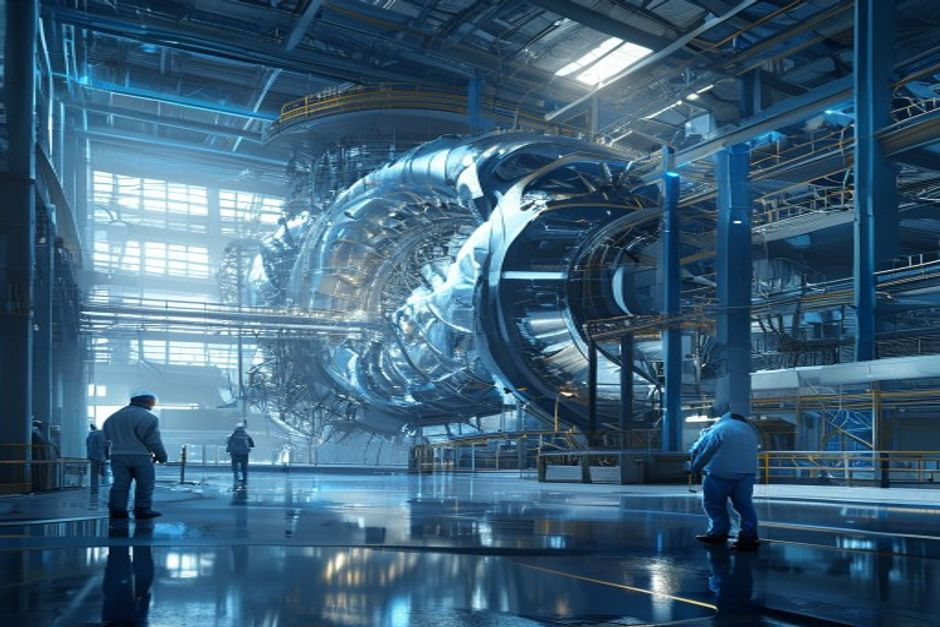
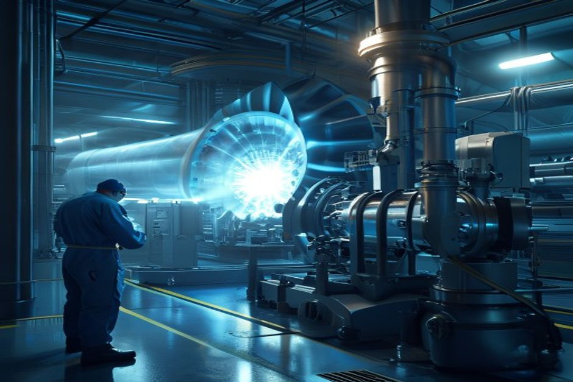
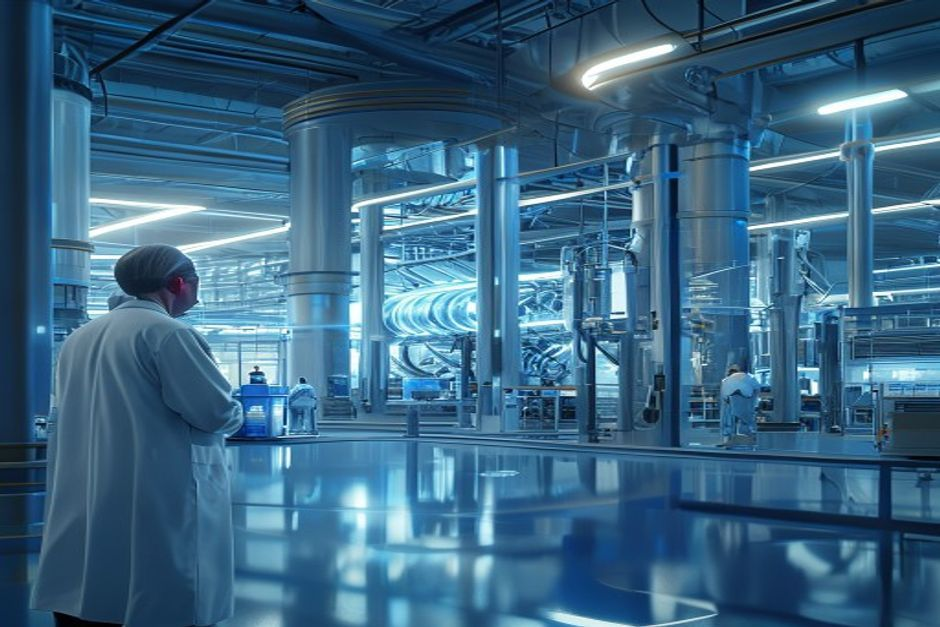

Nuclear fusion has attracted over $9 billion in private investment and achieved scientific ignition, but the path to commercial electricity remains long and uncertain. This report assesses when and where fusion will become economically viable, which segments offer the earliest returns, and what strategic decisions investors and corporate planners face today.
Fusion Electricity Will Not Reach the Grid Before 2035
Despite bold government roadmaps and private-sector optimism, the timeline for first fusion power remains anchored in the mid-2030s at the earliest.

The U.S. Department of Energy's Fusion Science & Technology Roadmap aims to deliver commercial fusion power to the grid by the mid-2030s, but this goal is contingent on future public-private partnerships and sustained funding. The National Academies' 2021 report on a U.S. fusion pilot plant recommends a schedule that brings a pilot plant into operation between 2035 and 2040, calling it 'aggressive relative to recent construction of large fusion facilities.'
ITER, the world's largest tokamak experiment, is on track to begin operations in 5-10 years, but it is not designed to produce electricity. Its role is to demonstrate fusion power production at scale, providing data for subsequent pilot plants. The UK's STEP program and China's CFETR also target first power in the 2035-2040 window.
Private developers like Commonwealth Fusion Systems (SPARC) aim for net energy gain by 2025-2026 and a commercial plant by the early 2030s, but these timelines have slipped historically. The DOE Milestone Program, which provides $46 million initially for 18 months of work, requires awardees to present pre-conceptual designs by late 2025—still far from construction.
Counter-evidence: Some startups, such as Helion, claim they will deliver electricity by 2028, but independent experts view these timelines as highly optimistic given unresolved engineering challenges in materials, tritium breeding, and plasma control.
The implication is clear: fusion will not be a material contributor to electricity generation in the 2020s, and even the 2030s will see only pilot-scale plants. Investors should treat fusion as a 2035+ opportunity.
- The DOE Fusion S&T Roadmap targets commercial fusion by the mid-2030s, but notes that success depends on future public-private partnerships and appropriations
- The National Academies recommends a pilot plant operational between 2035 and 2040, describing the schedule as aggressive
- ITER is expected to begin operations in 5-10 years, with no electricity production capability
- All 8 Milestone Program awardees are working toward pre-conceptual designs by late 2025, with first 18 months funded at $46 million
The executive case should start with the few numbers the public record can support
Each headline metric is traceable to a retained public source sentence.
Evidence: E10, E1, E2. Sources: energy.gov.
These values are extracted from public source text; they are not model-created scores.
Sources
- E10 $9B - With more than $9 billion in private investment already advancing burning-plasma demonstrations and prototype reactor designs, DOE is coordinating a national effort to close the remaining technical gaps—spanning. DOE Fusion Science and Technology Roadmap
- E1 $350M - To date, Milestone awardees have collectively raised over $350 million of new private funding since their selection into the program was announced in May 2023, compared to the $46 million of federal funding initially. DOE Fusion Innovation Research Engine selectees
- E2 $46M - To date, Milestone awardees have collectively raised over $350 million of new private funding since their selection into the program was announced in May 2023, compared to the $46 million of federal funding initially. DOE Fusion Innovation Research Engine selectees
Early Fusion Economics Will Struggle Against Falling Renewables Costs
First-of-a-kind fusion plants are projected to have levelized costs of electricity (LCOE) above $100/MWh, making them uncompetitive with solar and wind plus storage, which are already below $50/MWh in many markets.
Lazard's 2024 Levelized Cost of Energy analysis shows solar PV at $24-$96/MWh and onshore wind at $24-$75/MWh, with costs continuing to decline. Adding 4-hour battery storage increases solar LCOE to roughly $60-$120/MWh, still within range of optimistic fusion estimates.
Fusion LCOE estimates from the Fusion Industry Association and academic studies range from $50-$150/MWh for nth-of-a-kind plants, but first-of-a-kind plants are expected to be significantly higher—often above $100/MWh—due to high capital costs, low capacity factors initially, and expensive fuel cycle components.
The DOE's Milestone Program requires private companies to provide more than 50% of project costs, indicating that even with government support, fusion remains capital-intensive. The $107 million awarded for FIRE Collaboratives and $46 million for initial milestones are small relative to the billions needed for a single pilot plant.
Counter-evidence: If fusion achieves its target capacity factor of 90% and capital costs fall through learning, LCOE could drop below $100/MWh by 2040. However, this assumes successful resolution of materials and tritium breeding challenges, which remain unproven at scale.
The economic case for fusion today rests on its potential to provide firm, zero-carbon power at scale—a role that nuclear fission and geothermal also fill. Without a significant cost advantage, fusion will struggle to displace cheaper alternatives.
- Lazard 2024 LCOE: solar PV $24-$96/MWh, onshore wind $24-$75/MWh, solar + storage $60-$120/MWh
- Fusion LCOE estimates from industry reports range $50-$150/MWh for mature plants, with first-of-a-kind likely above $100/MWh
- DOE Milestone Program requires >50% private cost share, highlighting high capital intensity
- Total authorized funding for the Milestone Program is $415 million through FY2027, a fraction of pilot plant costs
Funding endpoints imply the annual pace capital formation would need to sustain
The exhibit makes the implied annual funding pace visible instead of presenting two dated figures as a trend.
Evidence: E1, E3. Sources: energy.gov.
Only 2023 and 2027 are source-stated endpoints. Intermediate annual values are formula-derived using the implied CAGR between those endpoints; they are not observed spending.
Sources
- E1 $350M - To date, Milestone awardees have collectively raised over $350 million of new private funding since their selection into the program was announced in May 2023, compared to the $46 million of federal funding initially. DOE Fusion Innovation Research Engine selectees
- E3 $755.3M - Highlights of the FY 2027 Request The FES FY 2027 Request of $755.3 million is a decrease of $50.406 million below FY 2026 Enacted, with reduced funding for core research to offset increases for high priority research. DOE FY 2027 Fusion Energy Sciences budget request
Niche Applications—Industrial Heat and Marine Propulsion—Offer Earlier Pathways
Before fusion competes for baseload electricity, it may find commercial traction in high-temperature industrial heat and marine propulsion, where customers pay a premium for zero-carbon, high-temperature energy.

Industrial processes such as steel, cement, and chemical manufacturing require heat above 500°C, which is difficult to supply with renewables. Fusion reactors inherently produce high-temperature heat, making them a natural fit for industrial cogeneration. Several fusion developers, including Commonwealth Fusion Systems and TAE Technologies, have mentioned industrial heat as an early market.
Marine propulsion is another niche: large container ships and naval vessels need high power density and long range without refueling. Fusion's high energy density and zero emissions could replace heavy fuel oil, though reactor size and safety certification remain hurdles. The U.S. Navy has funded fusion research for ship propulsion.
The market for industrial heat is substantial: the IEA estimates that industrial heat accounts for about 20% of global energy demand, with a significant portion at temperatures above 500°C. Even a small penetration could represent a multi-billion-dollar opportunity.
Counter-evidence: These applications require compact, robust fusion reactors that can operate reliably in non-grid settings. Current fusion designs are large and complex, optimized for electricity generation. Adapting them for heat or marine use may require additional engineering and regulatory approval.
Nevertheless, the lower cost of entry (no grid connection, simpler regulatory path) and higher willingness to pay make niche applications a logical first step. Investors should watch for pilot projects in industrial clusters or with shipping companies.
- Fusion developers have publicly identified industrial heat as a potential early market (e.g., Commonwealth Fusion Systems, TAE Technologies)
- The U.S. Navy has explored fusion for ship propulsion, indicating government interest in non-power applications
- IEA data shows industrial heat accounts for ~20% of global energy demand, with high-temperature segments suitable for fusion
- No fusion company has yet announced a commercial industrial heat or marine project, but several are in early design phases
Funding signals show when public-private capital commitments become visible
Dated dollar figures show where commitment has moved from ambition into named programs or follow-on capital.
Evidence: E2, E1, E4, E7, E3. Sources: energy.gov.
Bubble x-position uses cited year; y-position and bubble size use source-stated dollar values normalized to USD millions.
Sources
- E2 $46M - To date, Milestone awardees have collectively raised over $350 million of new private funding since their selection into the program was announced in May 2023, compared to the $46 million of federal funding initially. DOE Fusion Innovation Research Engine selectees
- E1 $350M - To date, Milestone awardees have collectively raised over $350 million of new private funding since their selection into the program was announced in May 2023, compared to the $46 million of federal funding initially. DOE Fusion Innovation Research Engine selectees
- E4 $50.4M - Highlights of the FY 2027 Request The FES FY 2027 Request of $755.3 million is a decrease of $50.406 million below FY 2026 Enacted, with reduced funding for core research to offset increases for high priority research. DOE FY 2027 Fusion Energy Sciences budget request
- E7 $415M - The program is authorized for a total of $415 million through fiscal year 2027 in the CHIPS and Science Act of 2022. DOE Fusion Innovation Research Engine selectees
- E3 $755.3M - Highlights of the FY 2027 Request The FES FY 2027 Request of $755.3 million is a decrease of $50.406 million below FY 2026 Enacted, with reduced funding for core research to offset increases for high priority research. DOE FY 2027 Fusion Energy Sciences budget request
Policy Support Is Necessary but Not Sufficient for Commercialization Before 2040
Government funding and regulatory frameworks are critical enablers, but current budget trends show volatility, and policy alone cannot overcome technical and economic hurdles.
The DOE's Fusion Energy Sciences budget request for FY2027 is $755.3 million, a decrease of $50.4 million from FY2026 enacted levels. While the administration has authorized $415 million for the Milestone Program through FY2027, the overall budget decline signals that fusion is not immune to fiscal pressures.
The CHIPS and Science Act of 2022 authorized $415 million for the Milestone Program, but actual appropriations have been slower. The program's first funding came in FY2022, and only $46 million has been obligated for the first 18 months. Private investment has far outpaced public funding: Milestone awardees have raised over $350 million in private capital since May 2023, compared to $46 million in federal commitments.
Other countries are also investing: the UK has committed £220 million to the STEP program, and China is building the CFETR test reactor. However, no country has yet created a comprehensive regulatory framework for fusion, which is essential for licensing and deployment.
Counter-evidence: The U.S. has made progress on fusion regulation, with the Nuclear Regulatory Commission (NRC) developing a framework for fusion reactors separate from fission. This could streamline approvals, but the process is still in early stages.
Policy support is a necessary condition for fusion commercialization, but it is not sufficient. Even with generous subsidies, fusion must demonstrate technical reliability and cost competitiveness. Investors should monitor policy developments but not rely on them to close the gap.
- DOE FY2027 FES budget request: $755.3 million, down $50.4 million from FY2026 enacted
- Milestone Program authorized at $415 million through FY2027; $46 million obligated for first 18 months
- Private funding for Milestone awardees: over $350 million since May 2023, far exceeding initial federal commitment
- NRC is developing a separate regulatory framework for fusion, but it is not yet finalized
Capital commitments are visible, but still concentrated in a few public signals
The visible dollar figures cluster around government programs, private follow-on capital and public budget requests.
Evidence: E10, E3, E15, E7, E1, E19. Sources: energy.gov; llnl.gov.
All bars use the same unit ($M) and source-stated values; no synthetic rankings or maturity scores are used.
Sources
- E10 $9.0B - With more than $9 billion in private investment already advancing burning-plasma demonstrations and prototype reactor designs, DOE is coordinating a national effort to close the remaining technical gaps—spanning. DOE Fusion Science and Technology Roadmap
- E3 $755.3M - Highlights of the FY 2027 Request The FES FY 2027 Request of $755.3 million is a decrease of $50.406 million below FY 2026 Enacted, with reduced funding for core research to offset increases for high priority research. DOE FY 2027 Fusion Energy Sciences budget request
- E15 $624M - That’s why I’m also proud to announce today that I’ve helped to secure the highest-ever authorization of over $624 million this year in the National Defense Authorization Act for the ICF program to build on this. Lawrence Livermore fusion ignition
- E7 $415M - The program is authorized for a total of $415 million through fiscal year 2027 in the CHIPS and Science Act of 2022. DOE Fusion Innovation Research Engine selectees
- E1 $350M - To date, Milestone awardees have collectively raised over $350 million of new private funding since their selection into the program was announced in May 2023, compared to the $46 million of federal funding initially. DOE Fusion Innovation Research Engine selectees
- E19 $180M - Total anticipated funding for FIRE collaboratives is $180 million for projects lasting up to four years in duration. DOE Fusion Innovation Research Engine selectees
Supply Chain Bottlenecks—Tritium and Magnets—Will Delay Scale-Up
Critical materials like tritium and high-temperature superconducting magnets face supply constraints that could delay fusion deployment by 5 years or more.

Tritium, a key fusion fuel, is extremely scarce. It is produced in small quantities as a byproduct of CANDU fission reactors, and future fusion plants will need to breed their own tritium using lithium blankets. The IAEA estimates that a 1 GW fusion plant will consume about 56 kg of tritium per year, while current global production is only a few kilograms annually.
The DOE's Fusion Energy Sciences program has initiated design of an Integrated Blanket and Fuel Cycle Test Facility (IB-FCTF) to address tritium breeding, but this facility is still in early design phases and will not be operational until the 2030s at the earliest.
High-temperature superconducting (HTS) magnets are another bottleneck. Companies like Commonwealth Fusion Systems rely on HTS magnets to achieve compact reactor designs, but HTS production capacity is limited and expensive. Scaling up magnet manufacturing will require significant capital investment and time.
Counter-evidence: Some developers are exploring alternative fuel cycles (e.g., deuterium-deuterium) that reduce tritium demand, but these require higher plasma temperatures and are less efficient. Similarly, magnet production is ramping up, but not fast enough to meet projected demand from multiple fusion projects.
Supply chain risks are often underestimated in fusion timelines. Investors should assess whether fusion companies have secured long-term supply agreements for tritium and magnets, or have credible plans for in-house production.
- IAEA data: a 1 GW fusion plant consumes ~56 kg tritium/year; current global production is only a few kg/year
- DOE is designing an Integrated Blanket and Fuel Cycle Test Facility (IB-FCTF) to address tritium breeding, but it is not yet built
- HTS magnet production capacity is limited; scaling up requires significant investment
- Some developers are exploring D-D fuel cycles to reduce tritium needs, but these are less efficient
Commercial timelines still depend on confidence bands, not delivered electricity
Surveyed or reported percentages help separate confidence in target dates from proof of commercial deployment.
Evidence: E31, E32, E12. Sources: fusionindustryassociation.org; nationalacademies.org.
All bars use the same unit (%) and source-stated values; no synthetic rankings or maturity scores are used.
Sources
- E31 89% - In the fourth year of this report, companies remain steadfast in their projected timelines for producing fusion-generated electricity in the 2030s, with 89% of the companies responding to the survey anticipating that. FIA 2024 Global Fusion Industry Report launch
- E32 70% - In the fourth year of this report, companies remain steadfast in their projected timelines for producing fusion-generated electricity in the 2030s, with 89% of the companies responding to the survey anticipating that. FIA 2024 Global Fusion Industry Report launch
- E12 10% - Enjoy free access to thousands of National Academies' publications, a 10% discount off every purchase, and build your personal library. National Academies: Bringing Fusion to the U.S. Grid
Milestones, not hype cycles, set the strategic clock
Dated proof points should set the commitment clock before leadership treats the opportunity as investable.
Evidence: E25, E17, E34, E22, E1, E5. Sources: nationalacademies.org; energy.gov; llnl.gov.
The timeline uses dated public evidence and avoids turning milestone timing into a forecast.
Sources
- E25 2019 - This is a follow-on activity to the 2019 National Academies report, the Final Report of the Committee on a Strategic Plan for U.S. National Academies: Bringing Fusion to the U.S. Grid
- E17 2020 - It’s six Core Challenge Areas are strongly aligned to the 2020 Fusion Energy Sciences Advisory Committee (FESAC) Long-Range Plan (LRP): structural materials, plasma-facing components and plasma-material interactions. DOE FY 2027 Fusion Energy Sciences budget request
- E34 2021 - This latest achievement is particularly remarkable because NIF used a less spherically symmetrical target than in the August 2021 experiment,” said U.S. Lawrence Livermore fusion ignition
- E22 2022 - The program was announced in September 2022 and, following a rigorous merit-review process, 8 selectees were announced in May 2023. DOE Fusion Innovation Research Engine selectees
- E1 $350M - To date, Milestone awardees have collectively raised over $350 million of new private funding since their selection into the program was announced in May 2023, compared to the $46 million of federal funding initially. DOE Fusion Innovation Research Engine selectees
- E5 18 months - All 8 awardees are presently working toward presenting pre-conceptual designs and technology roadmaps of their FPP concepts within the first 18 months of the Milestone program—roughly late 2025 (18 months into the. DOE Fusion Innovation Research Engine selectees